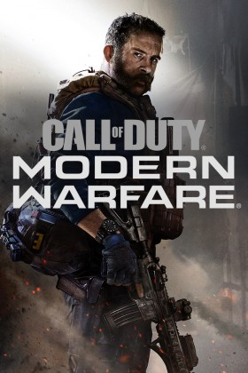

Modern Warfare
Call of Duty: Modern Warfare es un videojuego de disparos en primera persona desarrollado por Infinity Ward y
publicado por Activision. Es el decimosexto juego de la saga Call of Duty y es un reboot de la serie Modern Warfare.1 Fue lanzado el 25 de octubre de 2019.
En 2019, durante una operación encubierta para recuperar cargamentos de gas químico peligroso que se dirigían a Urzikistán,
el oficial de la CIA y de la SAC / SOG “Alex” es interceptado por hostiles desconocidos que matan a los Marines Raiders que lo
acompañan y escapan con el gas. La encargada de Alex, la jefa de estación Kate Laswell, solicita la ayuda del capitán de SAS,
John Price para recuperar los productos químicos y reducir la situación con Rusia. Veinticuatro horas después, un grupo de terroristas suicidas,
afiliado a la organización terrorista Al-Qatala, ataca el Piccadilly Circus en Londres. Se envía al sargento de SAS, Kyle Garrick para contener
la situación con la ayuda de Price y las fuerzas policiales locales. Posteriormente, Alex es enviado a Urzikistán para reunirse con el líder rebelde Farah Karim,
quien acepta unir fuerzas para rastrear los productos químicos, a cambio de su ayuda para derrocar a las fuerzas rusas dirigidas por el general Roman Barkov.
Las fuerzas del SAS dirigidas por Price y Garrick asaltan una casa ocupada por Al-Qatala, donde descubren la ubicación de su líder, Omar
“El Lobo” Sulaman. Alex, acompañado por el sargento Marcus Griggs y su escuadrón de infantes de marina, avanza hacia el Hospital Ramaza
en Urzikistán y captura a “El Lobo”. Más tarde, la mano derecha de “El Lobo”, Jamal “El Carnicero” Rahar, lanza un ataque a la Embajada
de los Estados Unidos en Urzikistán en un intento por liberar a “El Lobo”. Price, Garrick, Alex, Farah y las fuerzas de defensa de la embajada
trabajan juntos para asegurar a “El Lobo”, pero finalmente fracasan. Más tarde, a Farah se le ocurre un plan para tender una emboscada a los
hombres de “El Lobo” en la "Carretera de la Muerte" en Urzikistán. Su plan sale mal cuando los hombres de Barkov atacan tanto a las fuerzas rebeldes
como a los militantes de Al-Qatala. El hermano de Farah y segundo al mando, Hadir, se revela que es el ladrón que robó el cargamento químico; en un intento
de expulsar a las fuerzas hostiles, Hadir activa los productos químicos en el área, matando a todos los hombres de Barkov y las fuerzas de Al-Qatala, con Farah y Alex escapando de la muerte por poco.

Warzone
Este modo es nuevo en la saga y su funcionamiento es el de Battle Royale (como PUBG, Apex Legends y Fortnite),en
el que compiten hasta ciento cincuenta jugadores en solitario, en dúos, en tríos o en escuadrones. Los jugadores saltan
de un avión de carga que cruza el mapa en el momento que deseen, y empiezan solo con una pistola de mano. Cuando aterrizan,
deben buscar mejores armas, objetos útiles,dinero(con el que se podrán dirigir a cualquier de los centros de compra que hay
repartidos en el mapa para así comprar rachas de puntos o ventajas), evitando que los maten mientras atacan a otros jugadores.
La acción se divide en rondas con una duración determinada. Al acabar cada ronda, el área segura del mapa se reduce en tamaño
debido a una zona de gas mortífero; los jugadores que están fuera de esa área segura reciben daño y pueden morir a causa de ella
(a no ser que hayan conseguido una máscara de gas, que te proporciona hasta seis usos,es decir, con ella puedes aguantar unos segundos
dentro del gas sin sufrir daños). Esto obliga a los jugadores a estar en espacios cada vez más cerrados y fomenta los combates entre jugadores.
El último jugador o escuadrón vivo es el ganador. Existen una serie de contratos (o desafíos) repartidos a lo largo del mapa (para hacer el modo algo más frenético),
los hay de tres tipos: Carroñero (aparecen de 3 a 4 cajas cerca de la zona de donde has reclamado el desafío para conseguir un mejor equipamiento),
Contrato de matar (se marca a un enemigo en el mapa y tienes que matarlo, si lo ejecutas, recibes la recompensa) y de Bandera (se marca una localización en el mapa,
la misión es ir y asegurar la zona, como recompensa obtienes dinero, armas y hasta una señal que te indica donde se va a cerrar el próximo círculo). Por otro lado,
se ha innovado en temas de la salud, ahora existen unas placas de metal que puedes recoger en el mapa (hasta un máximo de cinco), también puedes recoger una mochila
de blindaje (que te permitirá tener hasta 8 placas), tienen la función de hacer de escudo, cuando recoges una te la puedes equipar en el chaleco para así tener una
especie de chaleco antibalas que te protege del daño de algunas balas, sin embargo, se puede romper (en este caso te tendrías que poner más placas).